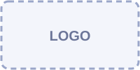

Mercredi 26 mai
- [Heure] Accueil des participants
- [Heure] Cérémonie d'ouverture
- [Heure] [À COMPLÉTER] Conférence
- [Heure] [À COMPLÉTER] Soirée
Journées Nationales MIAGE
📅 26 – 28 mai 2027 📍 Polytech, Université Lyon 1
Trois jours de rencontres entre étudiants, alumni, enseignants et entreprises autour de la MIAGE.
Les Journées Nationales MIAGE (Méthodes Informatiques Appliquées à la Gestion des Entreprises) réunissent chaque année la communauté de 21 MIAGE de France. En 2027, Lyon organise cet événement.
[À COMPLÉTER] Texte de présentation : historique des JNM, objectifs de cette édition, thème 2027, nombre de participants attendus, équipe organisatrice…
Des intervenants du monde académique et de l'entreprise.
Des échanges entre étudiants, diplômés et recruteurs.
Des moments festifs pour découvrir Lyon ensemble.
Les personnes qui préparent les JNM 2027 :
[À COMPLÉTER] Noms, rôles et photos des membres de l'équipe.
[Rôle, ex. : Président·e du comité d'organisation]
[Rôle, ex. : Responsable partenariats]
[Rôle, ex. : Responsable logistique]
[Rôle, ex. : Responsable communication]
[À COMPLÉTER] Programme provisoire : les horaires et les contenus ci-dessous sont des exemples à remplacer.
Les inscriptions se font en ligne. Choisissez la formule qui vous correspond, puis cliquez sur le bouton pour vous inscrire.
[À COMPLÉTER] €
[À COMPLÉTER] Ce qui est inclus (conférences, repas, soirée…)
[À COMPLÉTER] €
[À COMPLÉTER] Ce qui est inclus
[À COMPLÉTER] €
[À COMPLÉTER] Ce qui est inclus
[À COMPLÉTER] Lien vers la plateforme d'inscription, date limite, nombre de places, conditions d'annulation.
Campus LyonTech – La Doua
15 boulevard André Latarjet
69100 Villeurbanne
[À COMPLÉTER] Vérifier l'adresse exacte et préciser le bâtiment et la salle.
Ils soutiennent les JNM 2027 :

Université Lyon 1[À COMPLÉTER] Vous souhaitez devenir partenaire ? Ajouter ici le lien vers la plaquette de partenariat.
Une question ? L'équipe d'organisation vous répond.
[À COMPLÉTER] Adresse e-mail de contact
Écrire à l'équipe[À COMPLÉTER] Liens vers les réseaux sociaux